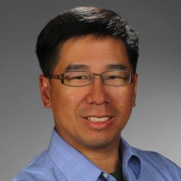

<ul class="profiles">
  <li class="story">
    <div>
      
      <h2 class="name">Alex Yang</h2>
      <p class="title">President and CEO</p>
      <p class="hook">
        Prior to founding Xelay Acumen, Inc, Alex Yang MD MBA gained an extensive 15+ years of senior management experiences in the biotechnology, pharmaceutical, medical device, and health care provider industries with deep expertise across various functions including medical affairs, marketing, corporate strategy, pricing, contracting, and data analytics.  Dr. Yang is a former McKinsey consultant and has advised senior management of 7 of the top 10 global pharmaceutical and biotechnology organizations.  Dr. Yang received his BS degree from the Massachusetts Institute of Technology, MD from the University of Chicago, and MBA from the University of Chicago.
      </p>
    </div>
  </li>
</ul>
